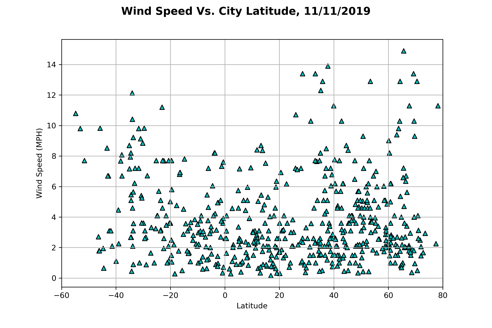

Comparison of the temperature, humidity, cloudiness, and wind speed data by scatter plot comparison with Latitude demonstrates clear differences between correlated and non-correlated data. Temperature is clearly correlated to latitude by visual inspection. In contrast, there is very little correlation observed in Humidity and Wind Speed plots, with only a marginal possible link to higher wind speed at higher and lower latitudes. Cloudiness has little if any correlation observable, with only curious clustering on %Coverage at 0%, 20%, 40%, 75%, 90% and 100% cloud coverage (a potential reason for this is proposed in the Cloud Cover Page).